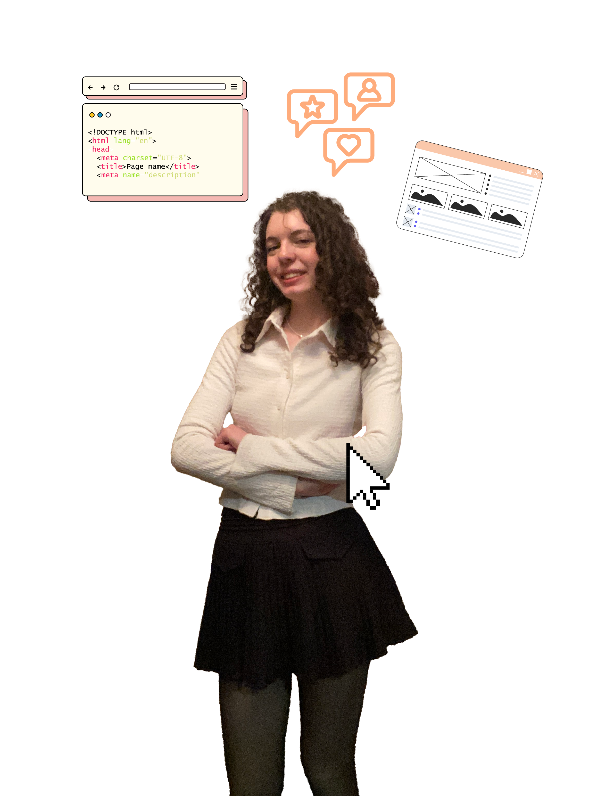

Éléonore
Perrin
Passionnée par les nouvelles technologies, je suis toujours à la recherche de moyens innovants pour combiner créativité et fonctionnalité. Mon amour pour le digital et les jeux vidéo, notamment Valorant, m’a profondément inspirée et a donné naissance à ce portfolio, conçu comme une vitrine de mes compétences et de ma vision.
Aujourd'hui, je me spécialise dans la conception UX/UI et le développement front-end, deux domaines qui me permettent d’unir design intuitif et performance technique. Mon objectif est de créer des expériences utilisateurs fluides, immersives et esthétiques, tout en maîtrisant les outils technologiques pour donner vie à ces idées.

Mes compétences
UX & UI Designer
- Création de wireframe
- Prototypage
- Maquette
- Visuel design
- Information de l'architecture